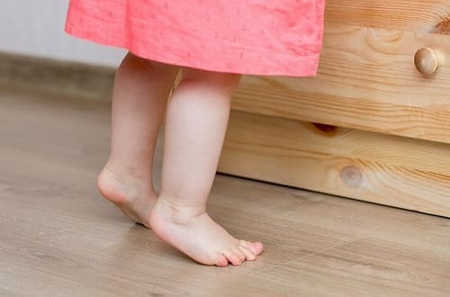

В большинстве случаев хождение на носочках является нормальной и временной особенностью; многие малыши проходят этап стояния на носочках в возрасте от 1 до 2 лет. Те, кто только учится ходить, любят экспериментировать с различными способами стоять, ходить и бегать, поэтому они пробуют ходить на носочках. Поняв, что так стоять или ходить неудобно, ребенок постепенно начинает становиться на всю стопу.
ПРИЧИНЫ
Существуют три основных причины хождения на носочках:
• В большинстве случаев хождение на носочках — всего лишь результат любопытства и незрелости, которые пройдут без какого-либо вмешательства со стороны.
• В некоторых случаях это вызвано уплотнением ахиллова сухожилия, которому может потребоваться растяжка (читайте ниже).
• В редких случаях, при наличии других признаков задержки развития, хождение на носочках может быть частью более серьезной проблемы развития.
КОГДА БЕСПОКОИТЬСЯ И ЧТО ДЕЛАТЬ
Ведите дневник. Записывайте, как часто ваш ребенок ходит на носочках и учащаются ли такие случаи.
Если нижеследующее относится к вашему ребенку, вам не стоит беспокоиться:
Если что-либо из нижеперечисленного относится к вашему ребенку, обратитесь к врачу:
ЧТО МОЖЕТ СДЕЛАТЬ ВРАЧ
Ваш врач сделает три вещи:
Если ахиллово сухожилие или мышцы голени кажутся напряженными, ваш врач может направить вас к специалисту по лечебной физкультуре, который покажет вам упражнения для растяжки ахиллова сухожилия, которые вы сможете выполнять дома. Примерно 10 раз в день просто сгибайте ступню ребенка по направлению к передней части ноги. Пойте песни и превратите эти упражнения в забавную игру, а не в неприятную медицинскую работу. Вы даже можете сделать это частью вашего процесса смены подгузников. Детей старшего возраста можно поставить лицом к стене, упираясь в нее руками, в то время как одна нога будет стоять на полу ровно, а коленка согнута по направлению к стене.
Здоровье ребенка от докторов Сирс / Сирс У. и др.